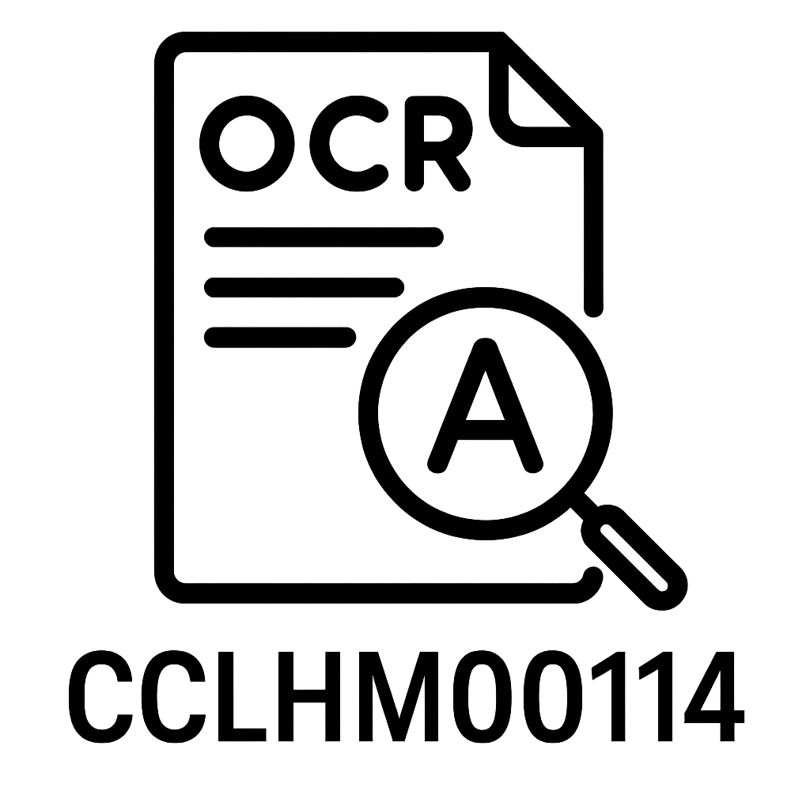
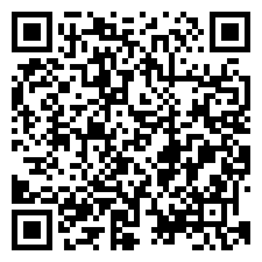

Oficina III: OCR e a Pesquisa Histórica
Aula 10
Prof. Eric Brasil
quinta-feira, 24 de abril de 2025
Acesse a apresentação da Oficina III com o QR Code abaixo


Sobre esta apresentação
Estes slides foram criados com o auxílio do ChatGPT-4o (em 23 de abril de 2025).
A responsabilidade final pelo conteúdo, curadoria e seleção das informações é do autor.
Objetivos da Aula
- Compreender o funcionamento de tecnologias de Reconhecimento Óptico de Caracteres (OCR).
- Aplicar ferramentas de OCR na extração de textos de documentos digitalizados.
- Avaliar os desafios e limitações do OCR em arquivos históricos.
Referência
Brasil, Eric. (2023). Reconhecimento ótico de caracteres. In: HEMDIG(pt) Framework: Métodos, ferramentas e hemerotecas digitais em português (Version v1.0.0). Jupyter Book. DOI: https://doi.org/10.5281/zenodo.8397782.
O que é OCR?
Chamamos de reconhecimento ótico de caracteres o processo computacional de aplicar um programa de computador para encontrar padrões de escrita em imagens e gerar um documento de texto como resultado.
Esse processo é muito importante para as pesquisas históricas no geral, visto que parte significativa das fontes históricas utilizadas em nossas pesquisas ainda são constituídas por documentos escritos (impressões ou manuscritos) em papel.
Digitalização em Massa e Imagens Estáticas
Desde os anos 1990, vemos o crescimento acelerado de projetos de digitalização em massa de documentos históricos.
É muito recorrente que o objeto digital oriundo desse processo de digitalização seja uma imagem estática em formatos variados.
Por que transformar imagem em texto?
Para aplicar técnicas e ferramentas digitais — desde buscas simples até técnicas avançadas como processamento de linguagem natural ou modelagem de tópicos — precisamos transformar essas imagens em documentos de texto.
Só assim os dados podem ser estruturados conforme as metodologias e interesses das pesquisas.
O papel do OCR
Para que isso seja possível, precisamos realizar o reconhecimento ótico de caracteres (OCR) nesses conjuntos de imagens.
Portanto, essa é uma etapa fundamental para pesquisas com jornais históricos digitalizados.
Um processo desafiador
Entretanto, esse não é um processo simples: demanda conhecimento computacional, máquinas potentes e investimento de tempo e capital.
Realizar OCR de forma individualizada, sem acompanhamento especializado, muitas vezes se torna um desafio quase intransponível.
Dificuldades em jornais históricos digitalizados
Esses desafios se tornam ainda maiores no caso dos jornais históricos, pois possuem características que dificultam o processo:
- Baixa qualidade da digitalização
- Fontes muito variadas e desconhecidas
- Layouts complexos, com muitas colunas e grandes variações em uma mesma edição
- Ruídos na imagem: rasgos, rasuras, manchas, cortes, etc.
Definição de Estratégias: Volume e Qualidade dos Dados
As estratégias de tratamento das imagens de jornais digitalizados variam de acordo com:
- Volume e qualidade das páginas digitalizadas
- Disponibilidade de tempo, recursos e conhecimento técnico
Avaliação do seu dataset
Antes de iniciar o processo de OCR, avalie o conjunto de dados considerando:
- Volume do dataset:
- É composto por milhares de imagens (impossibilitando tratamento manual)?
- Ou é um conjunto reduzido, até mil imagens, permitindo intervenção individualizada?
- Qualidade da digitalização:
- Imagens possuem resolução elevada?
- Já foram pré-processadas (ruídos, manchas, curvas corrigidas, etc)?
- Recursos disponíveis:
- Há financiamento específico para tratamento das imagens?
- Há profissionais especializados no projeto?
Definindo estratégias realistas para OCR
A partir dessa avaliação, é possível elaborar estratégias realistas para a etapa de OCR.
Três encaminhamentos principais:
⚙️ Estratégia A: Grande volume de dados
- Use ferramentas de linha de comando para OCR (ex: Tesseract).
- Se necessário, aplique ferramentas de pré-processamento (ex: OCR-D).
- Se as imagens forem de alta qualidade, use modelos prontos para o português (Tesseract).
- Se houver baixa qualidade, fontes variadas ou layouts complexos, pode ser necessário treinar modelos específicos — exigindo alto investimento computacional e humano.
🖱️ Estratégia B: Volumes reduzidos
- Utilize o gImageReader (interface gráfica, código aberto) ou outro programa de OCR com interface gráfica.
- Ideal para tratamento manual, permitindo correções personalizadas.
- Requer menos conhecimento técnico e permite correção manual dos resultados.
- Não exige treinamento de modelos específicos.
🤖 Estratégia C: Uso de Inteligência Artificial para OCR
- Indicada para:
- Imagens de baixa qualidade, com muitos ruídos ou fontes não convencionais.
- Manuscritos ou impressos com desafios severos.
- Pesquisadores interessados em testar tecnologias de ponta.
⚠️ Observação importante
O que é considerado “grande volume” depende das especificidades de cada pesquisa:
Métodos, teoria, infraestrutura disponível.
Aqui, mil imagens é um corte prático e arbitrário, mas avalie sempre suas necessidades.
O fundamental é adaptar a estratégia às suas possibilidades e objetivos.
⚙️Estratégia A: Exemplos práticos
Caso sua pesquisa demande o tratamento e análise de milhares de páginas digitalizadas de jornais históricos,
o encaminhamento mais acertado é a utilização de interfaces de linha de comando
que reúnam múltiplas ferramentas para:
- Tratamento e processamento de imagens
- Reconhecimento de layouts e caracteres
⚙️Automatização de Workflows
Ferramentas de linha de comando permitem:
- Automatizar o processamento em larga escala
- Integrar etapas como: pré-processamento, OCR, pós-processamento e exportação dos resultados
- Gerar datasets em formatos variados (.txt, .csv, .xml)
⚙️Exemplo básico com Tesseract
Instale o Tesseract e o idioma português:
No Ubuntu (Linux):
⚙️Exemplo básico com Tesseract
Instale o Tesseract e o idioma português:
No Windows (PowerShell):
- Baixe o instalador em: https://github.com/tesseract-ocr/tesseract/releases
- Durante a instalação, selecione o idioma português (Portuguese - por).
- Após instalar, adicione o caminho do Tesseract ao PATH do sistema, se necessário.
⚙️Exemplo básico com Tesseract
Processando uma única imagem:
ex01.jpg: imagem de entradaex01: nome do arquivo de saída (formato .txt por padrão)-l por: modelo de idioma (português)
⚙️Exemplo prático: OCR em lote com Tesseract (terminal)
Cenário
- Pasta com várias imagens
.jpeg(cada uma corresponde a uma página de um capítulo de livro) - Objetivo: gerar um arquivo
.txtpara cada imagem, usando Tesseract em português
Passo 1: Navegue até a pasta das imagens
Passo 2: Execute o OCR em todas as imagens JPG
"$img": arquivo de entrada (imagem)"${img%.jpeg}": nome do arquivo de saída, mesmo nome da imagem mas extensão.txt-l por: usa o modelo de idioma português
Resultado
- Para cada imagem (ex:
pagina01.jpg), será gerado um arquivo de texto (pagina01.txt) na mesma pasta. - O conteúdo de cada
.txtcorresponderá ao texto extraído da respectiva imagem.
Observação
- É importante garantir que o Tesseract está instalado e o idioma português disponível (
tesseract --list-langs). - Imagens com baixa qualidade podem gerar textos com muitos erros; revise os resultados!
⚙️Exemplo de workflow mais robusto: OCR-D
- O OCR-D é um framework modular, open source, para processamento em massa de acervos históricos.
- Permite encadear módulos de pré-processamento, layout analysis, OCR e exportação.
- Pode ser integrado com Docker para facilitar o uso em servidores.
⚙️Considerações sobre a Estratégia A
- Vantagens: Alto grau de automação, ideal para grandes volumes, permite personalização do workflow.
- Desvantagens: Exige conhecimento em linha de comando, tempo para configurar, maior curva de aprendizado.
- Dica: Documente bem seu processo para garantir reprodutibilidade e facilitar ajustes futuros.
⚙️Referências e recursos
🖱️Exemplos práticos: Estratégia B
Caso sua pesquisa demande o tratamento e análise de centenas de páginas digitalizadas de jornais históricos,
o encaminhamento mais acertado é a utilização de interfaces gráficas de usuário (GUIs).
🖱️Por que GUIs?
- Exigem menos conhecimento de programação
- Têm curva de aprendizagem mais rápida
- Resultados mais imediatos e acessíveis
🖱️Ferramenta recomendada: gImageReader
- gImageReader é uma GUI open source que utiliza o Tesseract como motor de OCR.
- Desenvolvido por Sandro Mani (GNU GPL v3).
- Disponível para Windows e Linux e totalmente traduzido para português (brasileiro).

🖱️Funcionalidades do gImageReader
- Importa PDFs e imagens do disco, scanners, área de transferência e capturas de tela
- Processa múltiplas imagens/documentos em lote
- Permite definir áreas de reconhecimento manual ou automaticamente
- Reconhece para texto simples ou hOCR
- Exibe texto reconhecido ao lado da imagem
- Pós-processamento, incluindo correção ortográfica
- Gera PDFs a partir de hOCR
Instalação: Ubuntu 22.04 LTS
sudo add-apt-repository ppa:sandromani/gimagereader
sudo apt update
sudo apt install gimagereader-gtkOu instale via flatpack
Após instalar, basta procurar por gImageReader no menu de aplicativos.
Instalação: Windows 10
- Baixe o instalador em: gImageReader Releases no GitHub
- Tutorial em vídeo: Como instalar e usar gImageReader no Windows 10 (YouTube)
Vantagens do gImageReader
- Resultados positivos tanto em reconhecimento de layout quanto de caracteres
- Excelente opção quando não temos tempo, recursos ou conhecimento para treinar modelos de OCR
- Permite edição das imagens, trabalho em bloco e correção manual dos resultados
- Taxas de confiança por palavra
- Exportação em diversos formatos (txt, hocr, pdf)
- Metadados completos de cada palavra, linha, bloco e página
🖱️Resumindo
O gImageReader é a solução ideal para pesquisadores/as que buscam:
- Facilidade de uso
- Código aberto
- Resultados rápidos e editáveis
- Integração total com o Tesseract
🤖 Exemplos práticos: Estratégia C
Caso sua pesquisa envolva imagens de difícil reconhecimento, manuscritos, fontes pouco convencionais, ou você deseje experimentar soluções de ponta com inteligência artificial, o encaminhamento mais indicado é o uso de ferramentas de OCR baseadas em IA.
🤖 Por que usar IA no OCR?
- Melhor desempenho com imagens de baixa qualidade e fontes incomuns
- Capacidade de lidar com manuscritos e layouts complexos
- Resultados frequentemente superiores ao OCR tradicional
- Permite pós-processamento automatizado, como correção ortográfica e análise estrutural
🤖 Dificuldades na Estratégia C
Necessidade de conhecimento em programação
Curva de aprendizado dos frameworks
Exigência de hardware mais potente
- Resultados variáveis
- Dificuldade com layouts muito complexos
🤖 EasyOCR (Deep Learning)
- Utiliza redes neurais convolucionais (CNNs) e LSTM.
- Open source, roda localmente, suporta múltiplos idiomas.
- Resultados superiores ao Tesseract em muitos casos desafiadores.
Fontes:
🤖 Exemplo prático (EasyOCR)
🤖 TrOCR (Transformers)
- Arquitetura de ponta, especialmente eficiente em manuscritos e textos complexos.
- Disponível via Hugging Face e Python, pode ser testado em notebooks online.
Fontes:
🤖 Exemplo prático (TrOCR)
- Para usar TrOCR, basta acessar este notebook do Hugging Face ou rodar em Python, se desejar:
from transformers import TrOCRProcessor, VisionEncoderDecoderModel
from PIL import Image
import requests
processor = TrOCRProcessor.from_pretrained('microsoft/trocr-base-handwritten')
model = VisionEncoderDecoderModel.from_pretrained('microsoft/trocr-base-handwritten')
image = Image.open('imagem_exemplo.jpg')
pixel_values = processor(image, return_tensors="pt").pixel_values
generated_ids = model.generate(pixel_values)
text = processor.batch_decode(generated_ids, skip_special_tokens=True)[0]
print(text)⚠️ Dificuldades Gerais no OCR
Apesar dos avanços das ferramentas e técnicas de OCR, alguns desafios permanecem recorrentes nas pesquisas com documentos históricos digitalizados:
Baixa qualidade de digitalização
Presença de ruídos e interferências
Fontes tipográficas incomuns ou manuscritos
Layouts complexos
Desalinhamento das páginas
Variação entre diferentes edições e períodos históricos
Impacto dessas dificuldades
- Redução da precisão do texto reconhecido
- Aumento do tempo de correção manual
- Necessidade de pré-processamento das imagens
- Limitação no uso direto de técnicas automatizadas de análise
Eric Brasil | Entre em contato | CCLHM00114 - Introdução à História Digital